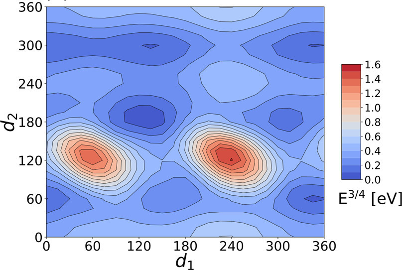

AI for the Life Sciences
an overview
HES-SO Valais-Wallis Institute of Informatics, EPFL MathMat Group
Goal for today
Foster collaborative innovation at the intersection of ML and Life Sciences within the HES ecosystem.
Goal for today
Foster collaborative innovation at the intersection of ML and Life Sciences within the HES ecosystem.
- Give an overview of the main "flavors" of ML
- Make you see the potential of ML in your field
- Raise awareness about needs and limitations
What is ML?
What is ML?
At the core ML = Statistics + Computing Power (... and a whole lot of data)
Where does the learning come from
At the core ML = Statistics + Computing Power (... and a whole lot of data)
Where does the learning come from
At the core ML = Statistics + Computing Power (... and a whole lot of data)
... and an objective
Where does the learning come from
At the core ML = Statistics + Computing Power (... and a whole lot of data)
- Requires pairs of training data + target output
- Need to specify objective (loss function)
- Model iteratively tuned to improve accuracy (diminish loss) on training data
Where does the learning come from
At the core ML = Statistics + Computing Power (... and a whole lot of data)
- Requires pairs of training data + target output
- Need to specify objective (loss function)
- Model iteratively tuned to improve accuracy (diminish loss) on training data
Limitations
- Need labelled data (most of the time)
- Hard to ensure generalization (overfitting)
What ML tries to solve
At the abstract level, we always have two ingredients:
- Input data $x_1, x_2, ...$
- Output data $f(x_1), f(x_2), ...$
What ML tries to solve
At the abstract level, we always have two ingredients:
- Input data $x_1, x_2, ...$
- Output data $f(x_1), f(x_2), ...$
The task is then usually one of the following
Inference & Prediction
Given $x$ predict $f(x)$
Pattern Discovery
Group $x_i$'s' that have similar values of $f(x_i)$
Find component of $x$ that has most effect on $f(x)$
Optimization & Action
Find $x$ that has maximal $f(x)$
Generation
Generate new $x_i$'s' that have similar $f(x_i)$ as $f(x)$
Example Problem: Creating new materials
Inference & Prediction
Pattern Discovery
Optimization & Action
Generation

Inference & Prediction
Given ingredients => predict properties (soft? conductive?)
Optimization & Action
Find mix of ingredients that give the best properties
Generation
Propose new recipes that give similar properties
Pattern Discovery
Find ingredient that has most effect on outcome
Choice of method depends on data
Small data vs Big data
Inference & Prediction
- Kernel / Bayesian Methods
- Decision Trees
- Deep Learning
Pattern Discovery
- Clustering / Dim. reduction
- Causal ML
Optimization & Action
- (Bayesian) Optimization
- Reinforcement Learning
Generation
- Generative adversarial networks
- Large language models
... and on goal
Deterministic vs Probabilistic

... and on goal
Deterministic vs Probabilistic
Inference & Prediction
- Kernel / Bayesian Methods
- Decision Trees
- Deep Learning
Pattern Discovery
- Clustering / Dim. reduction
- Anomaly detection
- Causal ML
Optimization & Action
- (Bayesian) Optimization
- Reinforcement Learning
Generation
- Generative adversarial networks
- Large language models
Deep Dive
Bayesian Optimization
Bayesian Optimization
Consider a function that we want to maximize (efficiency, yield, etc.)\[\begin{aligned} \rho^*: \mathbf{X} \rightarrow \mathbf{Y} \end{aligned} \]
Problem: $\rho^*$ is expensive to evaluate (simulations, lab experiments, ...) => cannot use traditional methodsBayesian Optimization
Consider a function that we want to maximize (efficiency, yield, etc.)\[\begin{aligned} \rho^*: \mathbf{X} \rightarrow \mathbf{Y} \end{aligned} \]
Problem: $\rho^*$ is expensive to evaluate (simulations, lab experiments, ...) => cannot use traditional methodsFocus on cases where objective $\rho^*$is:
- Black box (No gradients)
- Expensive to compute
- Noisy observations
Bayesian Optimization
Consider a function that we want to maximize (efficiency, yield, etc.)\[\begin{aligned} \rho^*: \mathbf{X} \rightarrow \mathbf{Y} \end{aligned} \]
Problem: $\rho^*$ is expensive to evaluate (simulations, lab experiments, ...) => cannot use traditional methodsFocus on cases where objective $\rho^*$is:
- Black box (No gradients)
- Expensive to compute
- Noisy observations
Lab experiment (no gradients)
Expensive simulation
Noisy survey
Idea: include prior knowledge

Idea: include prior knowledge
- use prior knowledge to construct a class of functions to which $\rho^*$ belongs (GP).

- Use prior knowledge to construct a class of functions to which $\rho^*$ belongs (GP).
- Observe some data.
- Use prior knowledge to construct a class of functions to which $\rho^*$ belongs (GP).
- Observe some data.
- Keep functions that are compatible with the data.
- Use prior knowledge to construct a class of functions to which $\rho^*$ belongs (GP).
- Observe some data.
- Keep functions that are compatible with the data.
Use predicted function shape anduncertainty to guide exploration and find optimum
Example: Amino Acid Conformer Search
Find stable configurations of the cysteine molecule
Optimization problem: find configuration with minimum energies
- Moderate dimensional (5D) input space (dihedral angles)
- Target (energy) is expensive to compute
- Want to find all local minima
Energy Landscape Modelling
Use high accuracy energy predictions at various configurations to fit a probabilistic model- Bayesian Optimization is used to propose candidate stable configurations
- Energy of candidate configurations is computed at high-accuracy
- Model is updated with new data and loop continues
Method is able to recover the energy landscape and its minima
Predicted energy landscape
... and to find the 15 most stable conformers in as few as 1000 energy computations
Predicted most stable conformers
Summary
- Use prior knowledge to guide exploration
- Provide probabilistic predictions
- Can be used to guide structure search
Note that BO can also be applied in settings where we have
- multiple objectives
- different accuracy levels (multi-fidelity)
- combinatorial inputs
- indirect data
Resources
Bayesian Optimization (BO)
- A Tutorial on Bayesian Optimization, P.I. Frazier (2018)
- Recent Advances in Bayesian Optimization, X. Want, Y. Jin, S. Schmitt, M. Olhofer (2022)
- Library fo Bayesian Optimization over chemical space, Griffiths et al (2023)
- Amino Acid Conformer Search with Bayesian Optimization, L. Fang et al (2021)
Other current hot topics in ML / Life Science ...
Causal ML: Untangle which actions (treatments) yield which effects
- Causal machine learning for healthcare and precision medicine Sanchez et al, R. Soc. Open Sci. (2022)
Other current hot topics in ML / Life Science ...
Causal ML: Untangle which actions (treatments) yield which effects
- Causal machine learning for healthcare and precision medicine Sanchez et al, R. Soc. Open Sci. (2022)
Other current hot topics in ML / Life Science ...
Generative models (diffusion)
- Full-Atom Generation of in vitro Functioning Antibodies Martinkus et al, NeurIPS (2024)
Other useful resource:
... and how you can link them to competence centers within ISC
Grégory Mermoud
- LLMS
- Distributed systems
- Causal ML
Pamela Delgado

- Data engineering
- Infrastructure for ML
Louis Lettry
- Computer vision
Davide Calvaresi
- Mulit-agent systems
- explainable AI